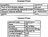

by Abraham Kandel
CRC Press, CRC Press LLC
ISBN: 084934297x Pub Date: 11/01/91
|
|
Fuzzy Expert Systems
by Abraham Kandel CRC Press, CRC Press LLC ISBN: 084934297x Pub Date: 11/01/91 |
| Previous | Table of Contents | Next |
Lawrence O. Hall
Abraham Kandel
Expert systems are computer programs that emulate the reasoning process of a human expert or perform in an expert manner in a domain for which no human expert exists. They typically reason with uncertain and imprecise information. There are many sources of imprecision and uncertainty. The knowledge that they embody is often not exact, in the same way that a human’s knowledge is imperfect. The facts or user-supplied information is also uncertain.
An expert system is typically made up of at least three parts: an inference engine, a knowledge base, and a global or working memory. The knowledge base contains the expert domain knowledge for use in problem solving. The working memory is used as a scratch pad and to store information gained from the user of the system. The inference engine uses the domain knowledge together with acquired information about a problem to provide an expert solution.
Expert systems have modeled uncertainty and imprecision in various ways. MYCIN30 uses certainty factors, while CASNET33 uses the most significant results of tests. We apply the well-established theory of fuzzy sets and fuzzy logic to the problem of modeling imprecision and uncertainty in expert systems. This provides a theoretical foundation for this crucial portion of an expert system. We also show that it is the case that fuzzy techniques can be used to provide a valid model of human reasoning.
The principles of software engineering do not appear to have been followed by many expert system developers. We have followed those principles. Expert systems have typically been developed, and then the development process has given rise to practical advice on building one. We developed a theory of building a fuzzy expert system, a methodology, and then applied it.
An expert system building methodology has been developed along with the necessary tools and theory to use fuzzy sets and logic in the reasoning process. A coherent description of the expert system is provided by the use of relations in all aspects of it. We have used our methodology to develop a fuzzy expert system, called Fess, which incorporates these described attributes.
There are many different forms in which knowledge may be represented in an expert system. Several different forms have been used very successfully for certain types of applications. The most pervasive form of knowledge representation is the rule-based form. That is because it is a natural form and easy to understand, as well as quite powerful. It enforces very little structure. Data-driven production rules are the most widely used form of rules. We desired a knowledge representation form that will provide great flexibility along with some structure to aid in its understanding.
Since it was desired a build a reusable expert system, its knowledge representation scheme must provide at least the power of a rule-based system. On the other hand, for some applications, it would be useful to allow a scaling down or structuring of the knowledge representation scheme. All knowledge representation schemes can be described as relations. For example, in a semantic net two nodes are either related by an arc (usually weighted) or they are not. So a natural fuzzy relation suggests itself. We chose fuzzy relations as a powerful and flexible knowledge representation scheme.
The combination of rules and frames in an expert system provides some definite structure to an expert system and has been found to be quite powerful. Along those lines it was speculated that the combination of relations and frames may also be very powerful. This would appear true, since rules can be easily described in a relational format. Frames also allow inheritance properties to come into play which can be important in some expert system applications.

Figure 1 Invariant and instance implication frames.
The frames used are broken up into two general classes. The classes are instance frames and invariant frames. The invariant frames contain the information that does not change about the relations. It will contain the number of elements in a relational-tuple. The properties of the relation such as transitive, reflexive, symmetric, etc. will also be in the invariant frame. A slot will contain information on how to calculate the fuzzy value of the relation; there will be a slot which contains information on how to find the attribute values, and one for the domains of each attribute of the relational-tuple. The name of the relation type is also included here. Invariant frames may also have a parent invariant frame associated with them. This provides a standard sort of inheritance mechanism. They may inherit properties that their parent frames possess.
In the instance frame, the unique name of a relation is contained. A link to its invariant parent frame is also included. It also contains the values for each attribute of the relation, the value for the relation, and the a priori relation certainty, if one exists. An example invariant frame and an instance of it are shown in Figure 1.
Frames are also used to store information about all the conclusions in the expert system. This includes intermediate and final conclusions. These frames indicate what relations give evidence about the conclusion and what relations use the conclusion.
Figure 2 Example implication relation.
The relations that are used in the system are simply n-tuples with some value assigned to them when each field in the relation is filled. The value of the relation will lie in the rational interval [0,1]. The relations are therefore not binary valued, but fuzzy valued. A relation may have an a priori determined certainty of less than one which is given by the expert. This means that the maximum value for the relation when completely satisfied will be the strength provided by the expert. All knowledge is represented in some type of relation. This includes meta-knowledge.
| Previous | Table of Contents | Next |
){kind=link}
){kind=link}